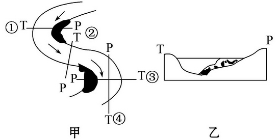
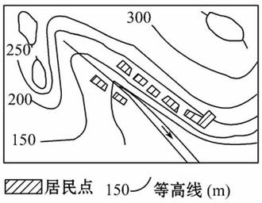
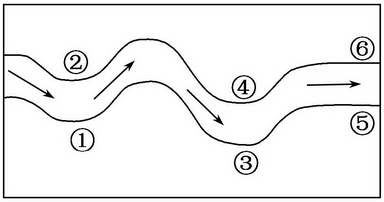
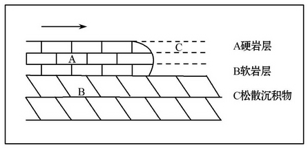
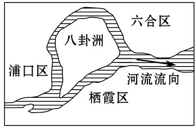

None - Fade - Slide - Convex - Concave - Zoom
选择班级
幻灯片样式
Black (default) -
White -
League -
Sky -
Beige -
Simple
Serif -
Blood -
Night -
Moon -
Solarized
下图为河流地貌示意图，读图完成1、2题。
1.图示河流地貌形成的原因，主要是河流的( )
A.侵蚀作用
B.搬运作用
C.溶蚀作用
D.风化作用
2.乙图所示地形剖面对应甲图中的( )
A.①②
B.②③
C.①③
D.④①
3.(2010·广东文综)下列关于河流的叙述，正确的是( )
A.河流右岸更容易遭受侵蚀
B.河水最深处位于河床中心
C.水面宽度一年中洪水期最大
D.自上游向下游流量逐渐增加
读某村落分布示意图，回答
4、5题。
4.图示村落的形态特点是( )
A.呈多边形
B.呈带状
C.呈环形
D.呈团状
5.该村落按图示分布的原因是( )
A.在山区由于地形的影响，村落顺河谷而建
B.平原面积开阔平坦，便于农耕
C.为逃避野兽袭击而建在山口
D.为防洪水，村落建在山脊
1.(2010·江苏学业水平测试)下图为北半球某河流示意图。若在下图中数字标注的河岸上种树护岸，需要优先考虑的地点是( )
A．①③⑤
B．①④⑤
C．②③⑥
D．②④⑥
下图表示一条河流流经不同性质的岩层地区。读图完成2、3题。
2.该地将会出现的地理景观是( )
A.“U”型谷
B.喀斯特溶洞
C.河流瀑布
D.河口三角洲
3.上图景观一般形成在河流的_______河段( )
A.上游
B.中游
C.下游
D.入海口处
4.“当年闻说绕江澜，撼地洪涛足下看。却喜涨沙成绿野，烟村耕凿久相安。”该诗为乾隆下江南时登临南京燕子矶所题，隐喻了地理环境的演变，导致这种变化的原因最可能是
( )
A.河流主流变动造成侵蚀与堆积的变化
B.地壳抬升使原水域变为陆域
C.河岸沙丘运动填入江中形成陆地
D.海平面上升造成河滩的淤积与扩展
八卦洲是长江南京段中的一个河心岛，读图回答5、6题。
5.八卦洲的形成原因最可能是( )
A.地壳抬升作用
B.地壳下陷作用
C.长江的侵蚀作用
D.长江携带的泥沙堆积
6.由于流水的侵蚀与堆积作用，长江河道及八卦洲未来的发展趋势最可能是( )
A.八卦洲将与长江南岸相连
B.八卦洲将与长江北岸相连
C.八卦洲以侵蚀为主，面积缩小
D.长江河道左偏，南岸淤塞